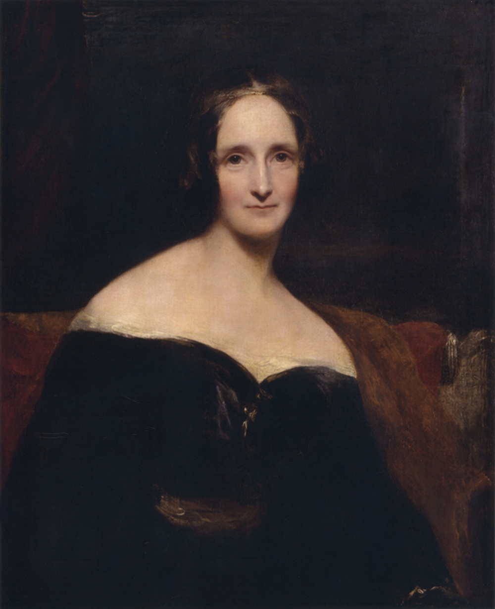
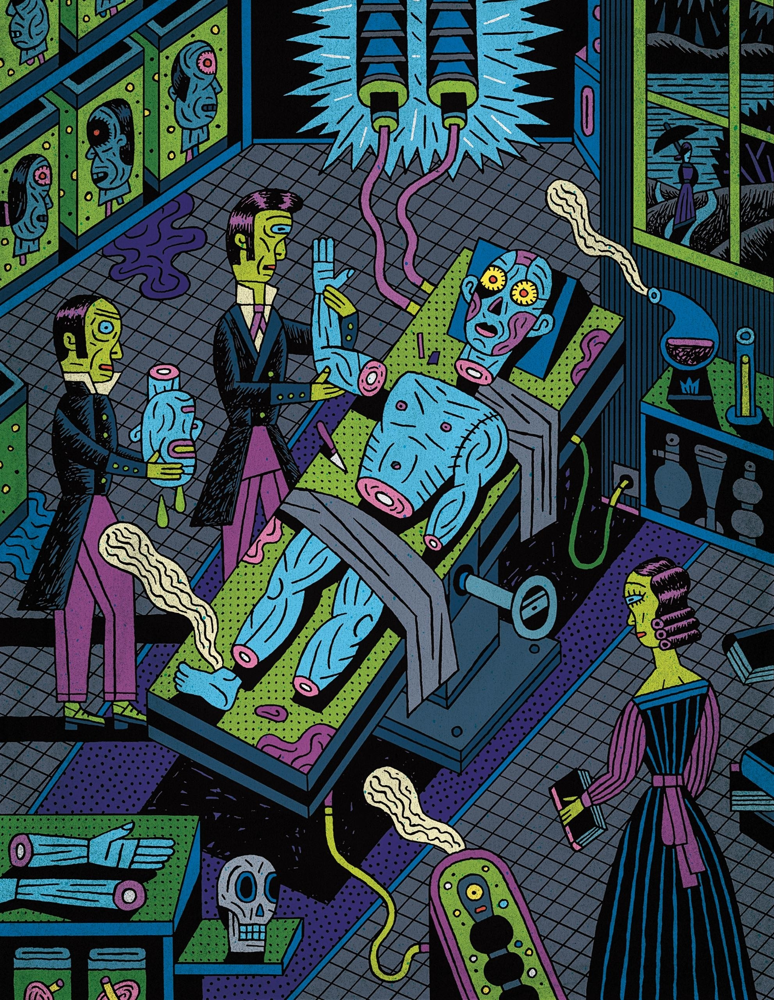
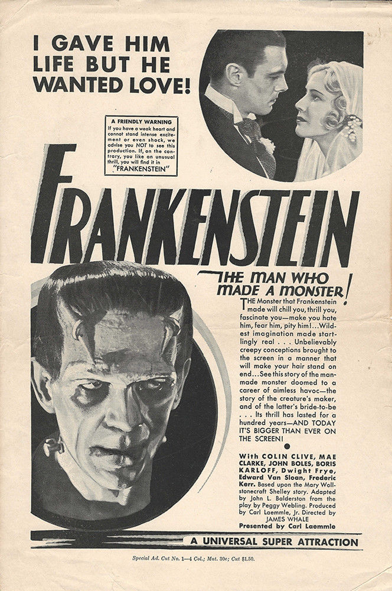

Mary Wollstonecraft Godwin Shelley began writing “Frankenstein; or, the Modern Prometheus” when she was eighteen years old, two years after she’d become pregnant with her first child, a baby she did not name. “Nurse the baby, read,” she had written
in her diary, day after day, until the eleventh day: “I awoke in the night to give it suck it appeared to be sleeping so quietly that I would not awake it,” and then, in the morning, “Find my baby dead.” With grief at that loss came a fear of
“a fever from the milk.” Her breasts were swollen, inflamed, unsucked; her sleep, too, grew fevered. “Dream that my little baby came to life again; that it had only been cold, and that we rubbed it before the fire, and it lived,” she wrote in
her diary. “Awake and find no baby.”
Pregnant again only weeks later, she was likely still nursing her second baby when she started writing “Frankenstein,” and pregnant with her third by the time she finished. She didn’t put her name on her book—she published “Frankenstein” anonymously,
in 1818, not least out of a concern that she might lose custody of her children—and she didn’t give her monster a name, either. “This anonymous androdaemon,” one reviewer called it. For the first theatrical production of “Frankenstein,” staged
in London in 1823 (by which time the author had given birth to four children, buried three, and lost another unnamed baby to a miscarriage so severe that she nearly died of bleeding that stopped only when her husband had her sit on ice), the
monster was listed on the playbill as “––––––.”
“This nameless mode of naming the unnameable is rather good.”

“Frankenstein” is four stories in one: an allegory, a fable, an epistolary novel, and an autobiography, a chaos of literary fertility that left its very young author at pains to explain her “hideous progeny.” In the introduction she wrote for a revised
edition in 1831, she took up the humiliating question “How I, then a young girl, came to think of, and to dilate upon, so very hideous an idea” and made up a story in which she virtually erased herself as an author, insisting that the story
had come to her in a dream (“I saw—with shut eyes, but acute mental vision,—I saw the pale student of unhallowed arts kneeling beside the thing he had put together”) and that writing it consisted of “making only a transcript” of that dream.
A century later, when a lurching, grunting Boris Karloff played the creature in Universal Pictures’s brilliant 1931 production of “Frankenstein,” directed by James Whale, the monster—prodigiously eloquent, learned, and persuasive in the novel—was
no longer merely nameless but all but speechless, too, as if what Mary Wollstonecraft Godwin Shelley had to say was too radical to be heard, an agony unutterable.
Every book is a baby, born, but “Frankenstein” is often supposed to have been more assembled than written, an unnatural birth, as though all that the author had done were to piece together the writings of others, especially those of her father and her
husband. “If Godwin’s daughter could not help philosophising,” one mid-twentieth-century critic wrote, “Shelley’s wife knew also the eerie charms of the morbid, the occult, the scientifically bizarre.” This enduring condescension, the idea of
the author as a vessel for the ideas of other people—a fiction in which the author participated, so as to avoid the scandal of her own brain—goes some way to explaining why “Frankenstein” has accreted so many wildly different and irreconcilable
readings and restagings in the two centuries since its publication. For its bicentennial, the original, 1818 edition has been reissued, as a trim little paperback (Penguin Classics), with an introduction by the distinguished biographer Charlotte
Gordon, and as a beautifully illustrated hardcover keepsake, “The New Annotated Frankenstein” (Liveright), edited and annotated by Leslie S. Klinger. Universal is developing a new “Bride of Frankenstein” as part of a series of remakes from its
backlist of horror movies. Filmography recapitulating politico-chicanery, the age of the superhero is about to yield to the age of the monster. But what about the baby?

“This nameless mode of naming the unnameable is rather good,” Shelley remarked about the creature’s theatrical billing. She herself had no name of her own. Like the creature pieced together from cadavers collected by Victor Frankenstein, her name was
an assemblage of parts: the name of her mother, the feminist Mary Wollstonecraft, stitched to that of her father, the philosopher William Godwin, grafted onto that of her husband, the poet Percy Bysshe Shelley, as if Mary Wollstonecraft Godwin
Shelley were the sum of her relations, bone of their bone and flesh of their flesh, if not the milk of her mother’s milk, since her mother had died eleven days after giving birth to her, mainly too sick to give suck—Awoke and found no mother.
“It was on a dreary night of November, that I beheld the accomplishment of my toils,” Victor Frankenstein, a university student, says, pouring out his tale. The rain patters on the windowpane; a bleak light flickers from a dying candle. He looks at the
“lifeless thing” at his feet, come to life: “I saw the dull yellow eye of the creature open; it breathed hard, and a convulsive motion agitated its limbs.” Having labored so long to bring the creature to life, he finds himself disgusted and horrified—“unable
to endure the aspect of the being I had created”—and flees, abandoning his creation, unnamed. “I, the miserable and the abandoned, am an abortion,” the creature says, before, in the book’s final scene, he disappears on a raft of ice.
